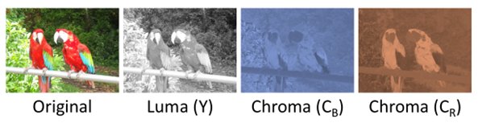
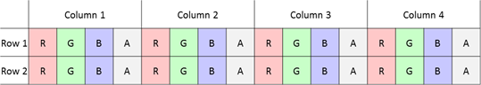
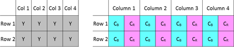
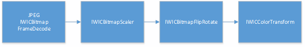

Starting with Windows 8.1, the Windows Imaging Component (WIC) JPEG codec supports reading and writing image data in its native YCbCr form. WIC YCbCr support can be used in conjunction with Direct2D to render YCbCr pixel data with an image effect. In addition, the WIC JPEG codec can consume YCbCr pixel data produced by certain camera drivers via Media Foundation.
YCbCr pixel data consumes significantly less memory than standard BGRA pixel formats. In addition, accessing YCbCr data allows you to offload some stages of the JPEG decode/encode pipeline to Direct2D which is GPU accelerated. By using YCbCr, your app can reduce JPEG memory consumption and load times for the same size and quality images. Or, your app can use more, higher resolution JPEG images without suffering from performance penalties.
This topic describes how YCbCr data works and how to use it in WIC and Direct2D.
This section explains some key concepts necessary to understand how YCbCr support in WIC works and its key benefits.
WIC in Windows 8 and earlier supports four different color models, the most common of which is RGB/BGR. This color model defines color data using red, green and blue components; a fourth alpha component may also be used.
Here is an image decomposed into its red, green and blue components.
YCbCr is an alternate color model that defines color data using a luminance component (Y) and two chrominance components (Cb and Cr). It is commonly used in digital imaging and video scenarios. The term YCbCr is often used interchangeably with YUV, although the two are technically distinct.
There are several variations of YCbCr which differ in color space and dynamic range definitions – WIC specifically supports JPEG JFIF YCbCr data. For more information, refer to the JPEG ITU-T81 specification.
Here is an image decomposed into its Y, Cb, and Cr components.

This section describes some differences between accessing and storing RGB pixel data in memory versus YCbCr data.
RGB pixel data is typically stored using an interleaved memory layout. This means that data for a single color component is interleaved between pixels, and each pixel is stored contiguously in memory.
Here is a figure showing RGBA pixel data stored in an interleaved memory layout.

YCbCr data is typically stored using a planar memory layout. This means that each color component is stored separately in its own contiguous plane, for a total of three planes. In another common configuration, the Cb and Cr components are interleaved and stored together, while the Y component remains in its own plane, for a total of two planes.
Here is a figure showing planar Y and interleaved CbCr pixel data, a common YCbCr memory layout.

In both WIC and Direct2D, each color plane is treated as its own distinct object (either an IWICBitmapSource or ID2D1Bitmap), and collectively these planes form the backing data for a YCbCr image.
While WIC supports accessing YCbCr data in both the 2 and 3 plane configurations, Direct2D only supports the former (Y and CbCr). Therefore, when using WIC and Direct2D together you should always use the 2 plane YCbCr configuration.
The YCbCr color model is well suited for digital imaging scenarios because it can take advantage of certain aspects of the human visual system. In particular, humans are more sensitive to changes in the luminance (brightness) of an image and less sensitive to chrominance (color). By splitting the color data into separate luminance and chrominance components, we can selectively compress just the chrominance components to achieve space savings with a minimal loss in quality.
One technique for doing this is called chroma subsampling. The Cb and Cr planes are subsampled (downscaled) in one or both of the horizontal and vertical dimensions. For historical reasons, each chroma subsampling mode is commonly referred to using a three part J:a:b ratio.
| Subsampling mode | Horizontal downscale | Vertical downscale | Bits per pixel* |
|---|---|---|---|
| 4:4:4 | 1x | 1x | 24 |
| 4:2:2 | 2x | 1x | 16 |
| 4:4:0 | 1x | 2x | 16 |
| 4:2:0 | 2x | 2x | 12 |
Â
* Includes Y data.
From the above table, if you use YCbCr to store uncompressed image data you can achieve a memory savings of 25% to 62.5% versus 32 bit per pixel RGBA data, depending on which chroma subsampling mode is used.
At a high level, the JPEG decompression pipeline consists of the following stages:
By having the JPEG codec produce YCbCr data, we can avoid the final two steps of the decode process, or defer them to the GPU. In addition to the memory savings listed in the previous section, this significantly reduces overall time needed to decode the image. The same savings apply when encoding YCbCr data.
This section explains how to use WIC and Direct2D to operate on YCbCr data.
To see the guidance from this document used in practice, see the JPEG YCbCr optimizations in Direct2D and WIC sample which demonstrates all of the steps needed to decode and render YCbCr content in a Direct2D app.
The vast majority of JPEG images are stored as YCbCr. Some JPEGs contain CMYK or grayscale data and do not use YCbCr. This means that you typically, but not always, can directly use pre-existing JPEG content without any modifications.
WIC and Direct2D do not support every possible YCbCr configuration, and YCbCr support in Direct2D is dependent upon the underlying graphics hardware and driver. Because of this, a general purpose imaging pipeline needs to be robust to images that do not use YCbCr (including other common image formats such as PNG or BMP) or to cases where YCbCr support is not available. We recommend that you keep your existing BGRA based imaging pipeline and enable YCbCr as a performance optimization when available.
WIC in Windows 8.1 adds three new interfaces to provide access to JPEG YCbCr data.
IWICPlanarBitmapSourceTransform is analogous to IWICBitmapSourceTransform, except that it produces pixels in a planar configuration, including YCbCr data. You can obtain this interface by calling QueryInterface on an implementation of IWICBitmapSource that supports planar access. This includes the JPEG codec’s implementation of IWICBitmapFrameDecode as well as IWICBitmapScaler, IWICBitmapFlipRotator, and IWICColorTransform.
IWICPlanarBitmapFrameEncode provides the ability to encode planar pixel data, including YCbCr data. You can obtain this interface by calling QueryInterface on the JPEG codec’s implementation of IWICBitmapFrameEncode.
IWICPlanarFormatConverter allows IWICFormatConverter to consume planar pixel data, including YCbCr, and convert it to an interleaved pixel format. It does not expose the ability to convert interleaved pixel data to a planar format. You can obtain this interface by calling QueryInterface on the Windows provided implementation of IWICFormatConverter.
Direct2D in Windows 8.1 supports YCbCr planar pixel data with the new YCbCr image effect . This effect provides the ability to render YCbCr data. The effect takes as input two ID2D1Bitmap interfaces: one containing planar Y data in the DXGI_FORMAT_R8_UNORM format, and one containing interleaved CbCr data in the DXGI_FORMAT_R8G8_UNORM format. You typically use this effect in place of the ID2D1Bitmap that would have contained BGRA pixel data.
The YCbCr image effect is intended to be used in conjunction with the WIC YCbCr APIs which provide the YCbCr data. This effectively acts to offload some of the decode work from the CPU to the GPU, where it can be processed much quicker and in parallel.
As noted before, your app should be robust to cases where YCbCr support is not available. This section discusses the conditions that your app should check for. If any of the following checks fail, your app should fall back to a standard BGRA-based pipeline.
Only the Windows provided JPEG codec and certain WIC transforms support YCbCr data access. For a complete list, refer to the Windows Imaging Component APIs section.
To obtain one of the planar YCbCr interfaces, call QueryInterface on the original interface. This will fail if the component does not support YCbCr data access.
After obtaining an IWICPlanarBitmapSourceTransform, you should first call DoesSupportTransform. This method takes as input parameters the complete set of transforms that you want to be applied to the planar YCbCr data, and returns a Boolean indicating support, as well as the closest dimensions to the requested size that can be returned. You should check all three values before accessing the pixel data with IWICPlanarBitmapSourceTransform::CopyPixels.
This pattern is similar to how IWICBitmapSourceTransform is used.
This check is only necessary if you are using the Direct2D YCbCr effect to render YCbCr content. Direct2D stores YCbCr data using the DXGI_FORMAT_R8_UNORM and DXGI_FORMAT_R8G8_UNORM pixel formats, which are not available from all graphics drivers.
Before using the YCbCr image effect, you should call ID2D1DeviceContext::IsDxgiFormatSupported to ensure that both formats are supported by the driver.
Below is a code example demonstrating the recommended checks. This example was taken from the JPEG YCbCr optimizations in Direct2D and WIC sample.
bool DirectXSampleRenderer::DoesWicSupportRequestedYCbCr()
{
ComPtr<IWICPlanarBitmapSourceTransform> wicPlanarSource;
HRESULT hr = m_wicScaler.As(&wicPlanarSource);
if (SUCCEEDED(hr))
{
BOOL isTransformSupported;
uint32 supportedWidth = m_cachedBitmapPixelWidth;
uint32 supportedHeight = m_cachedBitmapPixelHeight;
DX::ThrowIfFailed(
wicPlanarSource->DoesSupportTransform(
&supportedWidth,
&supportedHeight,
WICBitmapTransformRotate0,
WICPlanarOptionsDefault,
SampleConstants::WicYCbCrFormats,
m_planeDescriptions,
SampleConstants::NumPlanes,
&isTransformSupported
)
);
// The returned width and height may be larger if IWICPlanarBitmapSourceTransform does not
// exactly support what is requested.
if ((isTransformSupported == TRUE) &&
(supportedWidth == m_cachedBitmapPixelWidth) &&
(supportedHeight == m_cachedBitmapPixelHeight))
{
return true;
}
}
return false;
}
bool DirectXSampleRenderer::DoesDriverSupportYCbCr()
{
auto d2dContext = m_deviceResources->GetD2DDeviceContext();
return (d2dContext->IsDxgiFormatSupported(DXGI_FORMAT_R8_UNORM)) &&
(d2dContext->IsDxgiFormatSupported(DXGI_FORMAT_R8G8_UNORM));
}
If you want to obtain YCbCr pixel data you should call IWICPlanarBitmapSourceTransform::CopyPixels. This method copies pixel data into an array of filled-out WICBitmapPlane structures, one for each plane of data you want (for example, Y and CbCr). A WICBitmapPlane contains info about the pixel data and points to the memory buffer that will receive the data.
If you want to use the YCbCr pixel data with other WIC APIs you should create an appropriately configured IWICBitmap, call Lock to obtain the underlying memory buffer, and associate the buffer with the WICBitmapPlane used to receive the YCbCr pixel data. You can then use the IWICBitmap normally.
Finally, if you want to render the YCbCr data in Direct2D, you should create an ID2D1Bitmap from each IWICBitmap and use them as source for the YCbCr image effect. WIC allows you to request multiple planar configurations. When interoperating with Direct2D you should request two planes, one using GUID_WICPixelFormat8bppY and the other using GUID_WICPixelFormat16bppCbCr, as this is the configuration expected by Direct2D.
Below is a code example demonstrating the steps to decode and render YCbCr data in Direct2D. This example was taken from the JPEG YCbCr optimizations in Direct2D and WIC sample.
void DirectXSampleRenderer::CreateYCbCrDeviceResources()
{
auto wicFactory = m_deviceResources->GetWicImagingFactory();
auto d2dContext = m_deviceResources->GetD2DDeviceContext();
ComPtr<IWICPlanarBitmapSourceTransform> wicPlanarSource;
DX::ThrowIfFailed(
m_wicScaler.As(&wicPlanarSource)
);
ComPtr<IWICBitmap> bitmaps[SampleConstants::NumPlanes];
ComPtr<IWICBitmapLock> locks[SampleConstants::NumPlanes];
WICBitmapPlane planes[SampleConstants::NumPlanes];
for (uint32 i = 0; i < SampleConstants::NumPlanes; i++)
{
DX::ThrowIfFailed(
wicFactory->CreateBitmap(
m_planeDescriptions[i].Width,
m_planeDescriptions[i].Height,
m_planeDescriptions[i].Format,
WICBitmapCacheOnLoad,
&bitmaps[i]
)
);
LockBitmap(bitmaps[i].Get(), WICBitmapLockWrite, nullptr, &locks[i], &planes[i]);
}
DX::ThrowIfFailed(
wicPlanarSource->CopyPixels(
nullptr, // Copy the entire source region.
m_cachedBitmapPixelWidth,
m_cachedBitmapPixelHeight,
WICBitmapTransformRotate0,
WICPlanarOptionsDefault,
planes,
SampleConstants::NumPlanes
)
);
DX::ThrowIfFailed(d2dContext->CreateEffect(CLSID_D2D1YCbCr, &m_d2dYCbCrEffect));
ComPtr<ID2D1Bitmap1> d2dBitmaps[SampleConstants::NumPlanes];
for (uint32 i = 0; i < SampleConstants::NumPlanes; i++)
{
// IWICBitmapLock must be released before using the IWICBitmap.
locks[i] = nullptr;
// First ID2D1Bitmap1 is DXGI_FORMAT_R8 (Y), second is DXGI_FORMAT_R8G8 (CbCr).
DX::ThrowIfFailed(d2dContext->CreateBitmapFromWicBitmap(bitmaps[i].Get(), &d2dBitmaps[i]));
m_d2dYCbCrEffect->SetInput(i, d2dBitmaps[i].Get());
}
}
void DirectXSampleRenderer::LockBitmap(
_In_ IWICBitmap *pBitmap,
DWORD bitmapLockFlags,
_In_opt_ const WICRect *prcSource,
_Outptr_ IWICBitmapLock **ppBitmapLock,
_Out_ WICBitmapPlane *pPlane
)
{
// ComPtr guarantees the IWICBitmapLock is released if an exception is thrown.
ComPtr<IWICBitmapLock> lock;
DX::ThrowIfFailed(pBitmap->Lock(prcSource, bitmapLockFlags, &lock));
DX::ThrowIfFailed(lock->GetStride(&pPlane->cbStride));
DX::ThrowIfFailed(lock->GetDataPointer(&pPlane->cbBufferSize, &pPlane->pbBuffer));
DX::ThrowIfFailed(lock->GetPixelFormat(&pPlane->Format));
*ppBitmapLock = lock.Detach();
}
Transforming YCbCr data is nearly identical to decoding, as both involve IWICPlanarBitmapSourceTransform. The only difference is which WIC object you obtained the interface from. The Windows provided scaler, flip rotator and color transform all support YCbCr access.
WIC supports the notion of chaining together multiple transforms. For example, you can create the following WIC pipeline:

You can then call QueryInterface on the IWICColorTransform to obtain IWICPlanarBitmapSourceTransform. The color transform can communicate with the preceding transforms and can expose the aggregate capabilities of every stage in the pipeline. WIC ensures that the YCbCr data is preserved through the entire process. This chaining only works when using components that support YCbCr access.
Similar to the JPEG frame decode implementation of IWICBitmapSourceTransform, the JPEG frame decode implementation of IWICPlanarBitmapSourceTransform supports native JPEG DCT domain scaling and rotation. You can request a power of two downscale or a rotation directly from the JPEG decoder. This typically results in higher quality and performance than using the discrete transforms.
In addition, when you chain one or more WIC transforms after the JPEG decoder, it can leverage native JPEG scaling and rotation to satisfy the aggregate requested operation.
Use IWICPlanarFormatConverter to convert planar YCbCr pixel data to an interleaved pixel format such as GUID_WICPixelFormat32bppPBGRA. WIC in Windows 8.1 does not provide the ability to convert to a planar YCbCr pixel format.
Use IWICPlanarBitmapFrameEncode to encode YCbCr pixel data to the JPEG encoder. Encoding YCbCr data IWICPlanarBitmapFrameEncode is similar but not identical to encoding interleaved data using IWICBitmapFrameEncode. The planar interface only exposes the ability to write planar frame image data, and you should continue to use the frame encode interface to set metadata or a thumbnail and to commit at the end of the operation.
For the typical case, you should follow these steps:
Starting in Windows 10 build 1507, Direct2D provides ID2D1ImageSourceFromWic, a simpler way to decode JPEGs into Direct2D while leveraging YCbCr optimizations. ID2D1ImageSourceFromWic automatically performs all of the necessary YCbCr capability checks for you; it uses the optimized codepath when possible, and uses a fallback otherwise. It also enables new optimizations such as only caching subregions of the image that are needed at a time.
For more information about using ID2D1ImageSourceFromWic, refer to the Direct2D Photo Adjustment SDK sample.